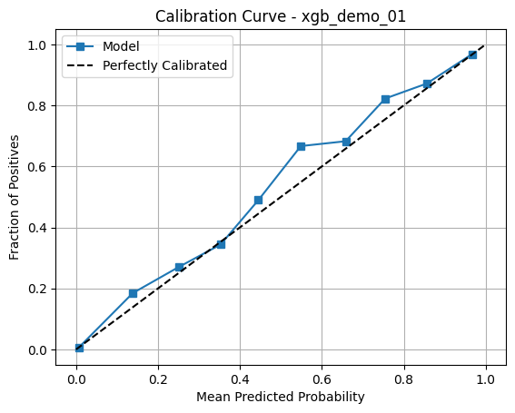

Standardizes ML benchmarking with YAML‑driven configs, automated evaluation, and export‑ready reports — ensuring consistent, reproducible, and transparent validation in Jupyter or CLI.
System Summary
Configure once via YAML, then evaluate consistently across models and datasets — generating audit‑ready outputs (ROC/PR, calibration, lift, permutation importance, SHAP) with a repeatable structure in both notebooks and CLI.
Hard to share → exportable HTML reports and static charts.
Task and Purpose
Built to unify my model validation workflow into a reproducible, consistent system. It began as Module 9 of the Analyst Toolkit and has since evolved into a standalone API. The project is currently in beta; feedback and contributions are welcome as capabilities expand.
Future State
Multi‑target & multi‑model support — side‑by‑side comparisons and multi‑output tasks.
Fairness & bias diagnostics — parity/impact checks and explainability enhancements.
Cloud ML pipeline integration — hooks for Vertex AI, SageMaker, and managed platforms.
Interactive dashboard mode — live, explorable evaluation for technical and business stakeholders.
Charts Viewer

Report Viewer
Select a sample export to preview inside the modal.